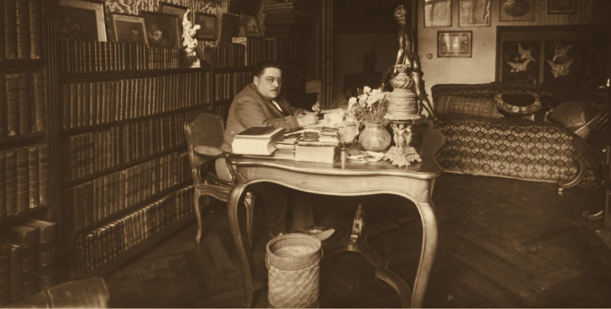

Gaston Leroux
Avocat, reporter, romancier : l’homme qui a écrit Le Fantôme de l’Opéra.
Ces pages sont une proposition. Le texte définitif sera écrit avec la famille Leroux.
Une vie, en dates vérifiées
- 6 mai 1868
Naissance à Paris. 1BnF
- Avocat · reporter
Avocat et chroniqueur judiciaire à L’Écho de Paris, puis reporter au Matin. 1BnF
- Janvier 1905
Envoyé spécial du Matin au Maroc : il raconte la marche vers la résidence du sultan. 2Gallica
- Janvier 1906
Le Matin publie, parmi les nouvelles de Russie, une correspondance signée Gaston Leroux, à la veille des élections à la Douma. 3Gallica
- 1907 – 1908
Le Mystère de la chambre jaune paraît dans L’Illustration (Supplément romans). Dans la première livraison, le reporter s’appelle encore « Boitabille ». Le volume suit chez Pierre Lafitte en 1908. 4BnF5BnF
- 1909
Il s’installe à Nice : le Mont Boron, puis Cimiez, enfin le boulevard Gambetta. 6Nice
- 23 sept. 1909 – 8 janv. 1910
Le Fantôme de l’Opéra paraît en feuilleton dans Le Gaulois, du prologue à l’épilogue. 7Gallica8Gallica
- 1910
Le volume paraît chez Pierre Lafitte, à Paris : 520 pages. 9BnF
- Le cinéma
Son premier film, La Nouvelle Aurore, avec René Navarre ; puis Rouletabille, produit par la Société des Cinéromans. 10Gallica
- 15 avril 1927
Il meurt à Nice. 1BnF
- 19 avril 1927
Obsèques à Nice, en l’église Saint-Pierre-d’Arène. Il repose au cimetière du Château, « dans cet admirable site qu’il aimait tant ». 11Gallica10Gallica
- 1928
Ses reportages de Russie paraissent en volume : L’Agonie de la Russie blanche. 12BnF
- 2027
Cent ans plus tard : LEROUX100.

L’œuvre : premières éditions
- Le Mystère de la chambre jauneL’Illustration 1907 – 1908 · Pierre Lafitte, 19084BnF5BnF
- Le Fantôme de l’OpéraLe Gaulois 1909 – 1910 · Pierre Lafitte, 19107Gallica9BnF
- Rouletabille chez le TsarPierre Lafitte, 191315BnF
- Chéri-BibiA. Fayard, 191416BnF
- La Maison des Juges · Alsacethéâtre10Gallica
- L’Agonie de la Russie blanchereportages, 192812BnF
Ce que nous ne savons pas encore
Nous n’écrivons que ce que nous pouvons prouver. Voici les questions encore ouvertes, et l’endroit où nous cherchons.
Où exactement est-il né ?
Où nous cherchons : Archives de Paris, état civil du 10e arrondissement, 1868.
Ses études de droit, ses années d’avocat
Où nous cherchons : registres de la Faculté de droit de Paris ; entretien de 1925 dans Les Nouvelles littéraires (Gallica).
Les grands procès qu’il a suivis
Où nous cherchons : Gallica : L’Écho de Paris et Le Matin, années 1890.
La Russie : combien de temps, quels reportages ?
Où nous cherchons : archives du Matin, Gallica, années 1904 – 1906.
La Société des Cinéromans : en quelle année, avec quel rôle ?
Où nous cherchons : Gallica, presse de cinéma 1918 – 1920 ; Cinémathèque française.
Montmartre : quel lien avec Gaston Leroux ?
Où nous cherchons : Archives de Paris ; et la mémoire de la famille.
Le manuscrit du Fantôme de l’Opéra : où est-il ?
Où nous cherchons : BnF, département des Manuscrits, fonds Gaston Leroux (NAF 28093) ; l’étude de Martine Kahane (2024), qui consacre une annexe au « manuscrit-copie ». 14BnF17Classiques Garnier
Ce que seule la famille peut donner
Ces espaces attendent la famille de Gaston Leroux. Rien de ce qui la concerne ne sera publié sans son accord.
Souvenirs
Ce que l’on raconte de Gaston dans la famille : un mot, une habitude, une histoire.
Photographies
Des photographies de famille, avec la permission de les montrer.
Manuscrits et lettres
Des pages de sa main, des notes de travail, des lettres, des dédicaces.
Sa table de travail
Les objets qui l’entouraient quand il écrivait, à Nice.
D’où viennent ces faits
- BnF, notice d’autorité Gaston Leroux (1868 – 1927)
- Le Matin, 24 janvier 1905
- Le Matin, 15 janvier 1906
- BnF, L’Illustration. Supplément romans, 1907 – 1908
- BnF, Le mystère de la chambre jaune, Pierre Lafitte, 1908
- Nice Côte d’Azur, Gaston Leroux
- Le Gaulois, 23 septembre 1909
- Le Gaulois, 8 janvier 1910
- BnF, Fantôme de l’Opéra, P. Lafitte, 1910
- Comœdia, 29 avril 1927, p. 3
- Le Journal, 20 avril 1927, p. 2
- BnF, L’Agonie de la Russie blanche, 1928
- Gaston Leroux à sa table de travail, Studio A. Well, Nice, vers 1919 · BnF, NAF 28093 · domaine public
- BnF, Manuscrits, fonds Gaston Leroux, NAF 28093
- BnF, Rouletabille chez le Tsar, Pierre Lafitte, 1913
- BnF, Chéri-Bibi, A. Fayard, 1914
- M. Kahane, Enquête sur Le Fantôme de l’Opéra de Gaston Leroux, Classiques Garnier, 2024
Sources consultées le 7 novembre 2026. Les fac-similés de presse sont consultables sur Gallica (BnF).